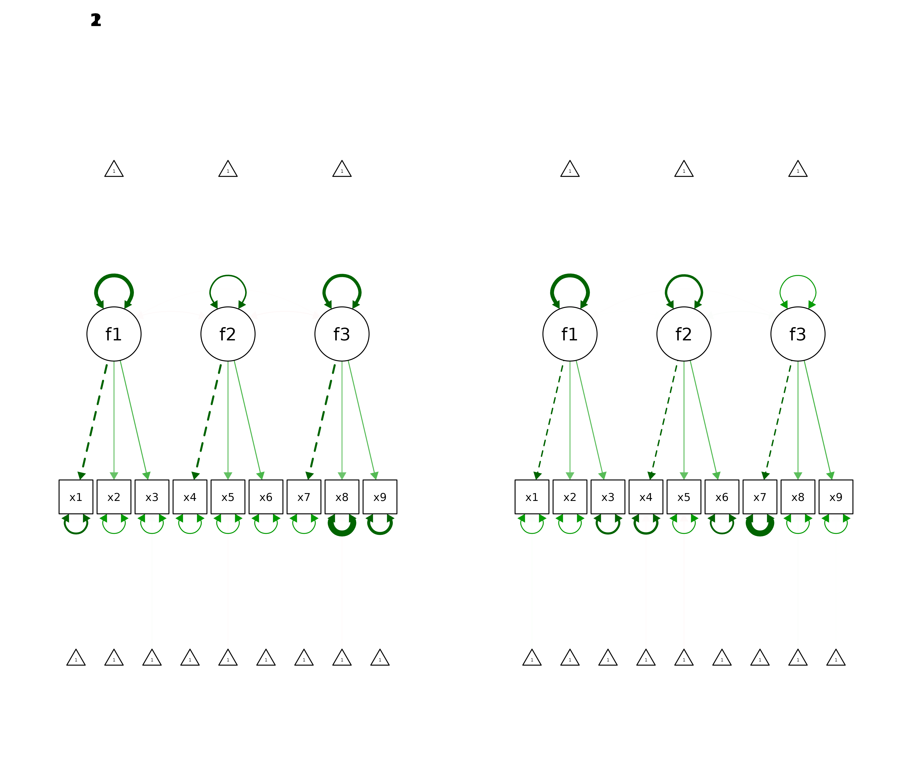

Code
graphics.off()
options(width=500)
options(digits=3)The data are simulated in lavaan. From this simulation it is possible to extract 3 factors and 2 arbitrary groups.
# specify population model
population_model<-'f1=~x1+.6*x2+.7*x3
f2=~x4+.6*x5+.7*x6
f3=~x7+.6*x8+.7*x9'
# generate data
set.seed(1234)
model_data<-lavaan::simulateData(population_model,sample.nobs=20000)
model_data$group<-NA
model_data[1:10000,]$group<-"Group1"
model_data[10001:20000,]$group<-"Group2"$summary
COLLUMNS ROWS TOTAL EMPTY null NAN na INF FIN FACTOR
1 10 20000 200000 0 0 0 0 0 180000 0
$check
NAMES EMPTY null na NOT_NA NAN INF FIN RANGE MEAN MEDIAN SD MIN MAX MODE TYPE CLASS FACTOR
1 x1 0 0 0 20000 0 0 20000 20000 0 0.01 1.42 numeric double numeric FALSE
2 x2 0 0 0 20000 0 0 20000 20000 0 0 1.15 numeric double numeric FALSE
3 x3 0 0 0 20000 0 0 20000 20000 0.01 0.01 1.22 numeric double numeric FALSE
4 x4 0 0 0 20000 0 0 20000 20000 -0.01 -0.01 1.42 numeric double numeric FALSE
5 x5 0 0 0 20000 0 0 20000 20000 -0.02 -0.02 1.16 numeric double numeric FALSE
6 x6 0 0 0 20000 0 0 20000 20000 0 0.01 1.22 numeric double numeric FALSE
7 x7 0 0 0 20000 0 0 20000 20000 0 0 1.42 numeric double numeric FALSE
8 x8 0 0 0 20000 0 0 20000 20000 0 0.01 1.17 numeric double numeric FALSE
9 x9 0 0 0 20000 0 0 20000 20000 0 0 1.22 numeric double numeric FALSE
10 group 0 0 0 20000 0 0 0 2 NA NA NA character character character FALSEThe specified model is shown in the figure below.
Model estimates are provided by three main matrices:
1. The lambda matrix representing factor loadings
2. The theta matrix, containing residual (error) variances of the items on the diagonal and residual covariances between items off the diagonal
3. The psi matrix, containing factor variances on the diagonal and factor covariances off the diagonal
Model estimates from a converged CFA model reproduce a model-implied covariance matrix, Sigma = Lambda × Psi × Lambda’ + Theta. A covariance matrix can also be computed directly from the item responses (the observed, sample covariance matrix). Because of that, we can compare the covariance matrix implied by the model and the covariance matrix computed from item responses. In a good model, these two matrices should have similar values. Fit indices, shown below, quantify model fit. There is conflicting information and several opinions on critical values of fit indices. In our case we consider good model fit to be indicated by:
1. RMSEA < .07
2. CFI > .90 (acceptable; > .95 good)
3. TLI > .90 (acceptable; > .95 good)
4. SRMR < .08
5. GFI > .95
rmsea cfi tli rni rfi ifi srmr gfi
0.000 1.000 1.000 1.000 0.998 1.000 0.005 1.000 $lambda
f1 f2 f3
x1 1.000 0.000 0.0
x2 0.585 0.000 0.0
x3 0.688 0.000 0.0
x4 0.000 1.000 0.0
x5 0.000 0.609 0.0
x6 0.000 0.694 0.0
x7 0.000 0.000 1.0
x8 0.000 0.000 0.6
x9 0.000 0.000 0.7
$theta
x1 x2 x3 x4 x5 x6 x7 x8 x9
x1 0.983
x2 0.000 0.974
x3 0.000 0.000 0.995
x4 0.000 0.000 0.000 1.002
x5 0.000 0.000 0.000 0.000 0.983
x6 0.000 0.000 0.000 0.000 0.000 0.997
x7 0.000 0.000 0.000 0.000 0.000 0.000 1.021
x8 0.000 0.000 0.000 0.000 0.000 0.000 0.000 1.014
x9 0.000 0.000 0.000 0.000 0.000 0.000 0.000 0.000 0.996
$psi
f1 f2 f3
f1 1.027
f2 -0.009 1.006
f3 -0.007 -0.004 0.983We first fit the model separately in each group, then fit a series of multi-group models with increasing equality constraints; if constraining lambda, nu (intercepts), theta or psi to be equal significantly worsens fit, the measurement is non-invariant at that level.
Before testing invariance, we fit the model separately to Group1 and Group2 to check that it fits acceptably in each group (separate-group baseline models).
# Model with the first group responses
ft<-lavaan::cfa(bf_model,data=model_data[model_data$group %in% "Group1",])
# Model with the second group responses
st<-lavaan::cfa(bf_model,data=model_data[model_data$group %in% "Group2",])
data.frame(Group1=lavaan::fitMeasures(ft,c("rmsea","cfi","tli","rni","rfi","ifi","srmr","gfi")),
Group2=lavaan::fitMeasures(st,c("rmsea","cfi","tli","rni","rfi","ifi","srmr","gfi"))) Group1 Group2
rmsea 0.00000 0.00651
cfi 1.00000 0.99904
tli 1.00181 0.99856
rni 1.00121 0.99904
rfi 0.99841 0.99517
ifi 1.00120 0.99904
srmr 0.00424 0.00822
gfi 1.00000 0.99977For configural invariance we specify a model with 2 groups. This procedure estimates separate lambda, theta, psi and nu (item intercept) matrices for each group, with latent means (alpha) fixed to 0. By comparing the two lambda and theta matrices we notice that their values are not identical. The question is whether the differences between these values are statistically significant. In any case, the configural invariance model below displays similar fit indices compared with the separate-group models above. But more importantly, according to fit indices the model fits the data and this suggests configural invariance.
rmsea cfi tli rni rfi ifi srmr gfi
0.000 1.000 1.000 1.000 0.997 1.000 0.006 1.000 $Group1
$Group1$lambda
f1 f2 f3
x1 1.000 0.000 0.000
x2 0.588 0.000 0.000
x3 0.717 0.000 0.000
x4 0.000 1.000 0.000
x5 0.000 0.609 0.000
x6 0.000 0.704 0.000
x7 0.000 0.000 1.000
x8 0.000 0.000 0.569
x9 0.000 0.000 0.668
$Group1$theta
x1 x2 x3 x4 x5 x6 x7 x8 x9
x1 0.999
x2 0.000 0.971
x3 0.000 0.000 0.977
x4 0.000 0.000 0.000 0.989
x5 0.000 0.000 0.000 0.000 0.983
x6 0.000 0.000 0.000 0.000 0.000 0.987
x7 0.000 0.000 0.000 0.000 0.000 0.000 0.966
x8 0.000 0.000 0.000 0.000 0.000 0.000 0.000 1.036
x9 0.000 0.000 0.000 0.000 0.000 0.000 0.000 0.000 1.009
$Group1$psi
f1 f2 f3
f1 1.017
f2 -0.020 0.995
f3 -0.007 -0.023 1.011
$Group1$nu
intrcp
x1 -0.005
x2 0.001
x3 0.015
x4 -0.005
x5 -0.011
x6 0.003
x7 -0.002
x8 -0.014
x9 -0.006
$Group1$alpha
intrcp
f1 0
f2 0
f3 0
$Group2
$Group2$lambda
f1 f2 f3
x1 1.000 0.000 0.00
x2 0.582 0.000 0.00
x3 0.658 0.000 0.00
x4 0.000 1.000 0.00
x5 0.000 0.609 0.00
x6 0.000 0.684 0.00
x7 0.000 0.000 1.00
x8 0.000 0.000 0.63
x9 0.000 0.000 0.73
$Group2$theta
x1 x2 x3 x4 x5 x6 x7 x8 x9
x1 0.964
x2 0.000 0.977
x3 0.000 0.000 1.012
x4 0.000 0.000 0.000 1.015
x5 0.000 0.000 0.000 0.000 0.983
x6 0.000 0.000 0.000 0.000 0.000 1.006
x7 0.000 0.000 0.000 0.000 0.000 0.000 1.072
x8 0.000 0.000 0.000 0.000 0.000 0.000 0.000 0.991
x9 0.000 0.000 0.000 0.000 0.000 0.000 0.000 0.000 0.982
$Group2$psi
f1 f2 f3
f1 1.039
f2 0.002 1.017
f3 -0.010 0.016 0.960
$Group2$nu
intrcp
x1 0.014
x2 0.004
x3 0.002
x4 -0.015
x5 -0.021
x6 0.003
x7 0.002
x8 0.016
x9 0.009
$Group2$alpha
intrcp
f1 0
f2 0
f3 0
In order to test if differences between estimated matrices among models are significant, we have to create a series of models for which impose equality constraints for parameters between groups. By imposing constraints we impose the estimator procedure to keep a matrix between groups equal. For instance by imposing an equality constraint on loadings, we force the parameter estimator to produce models that have equal lambda matrices between groups. Finally we compare the unconstrained and constrained models to see if they have any differences. If the constrained model does not fit significantly worse (and ΔCFI ≤ .01; Cheung & Rensvold, 2002), invariance at that level is supported.
For weak metric invariance we impose a restriction that groups have equal loadings.
Chi-Squared Difference Test
Df AIC BIC Chisq Chisq diff RMSEA Df diff Pr(>Chisq)
bf 48 573053 573528 45.4
bf_metric 54 573051 573478 55.0 9.56 0.0077 6 0.14For strong scalar invariance we impose the restriction that groups have equal loadings and intercepts and then compare the strong scalar invariance model with the weak metric invariance model.
Chi-Squared Difference Test
Df AIC BIC Chisq Chisq diff RMSEA Df diff Pr(>Chisq)
bf_metric 54 573051 573478 55.0
bf_scalar 60 573044 573424 60.4 5.46 0 6 0.49For strict error variance invariance, we impose the restriction that groups have equal loadings intercepts and residuals.
Chi-Squared Difference Test
Df AIC BIC Chisq Chisq diff RMSEA Df diff Pr(>Chisq)
bf_scalar 60 573044 573424 60.4
bf_full_strict 69 573030 573338 64.0 3.6 0 9 0.94For factor variance covariance invariance we impose the restriction that groups have equal loadings intercepts residuals latent variable variances and latent variable covariances.
Chi-Squared Difference Test
Df AIC BIC Chisq Chisq diff RMSEA Df diff Pr(>Chisq)
bf_full_strict 69 573030 573338 64
bf_factor_vc 75 573027 573288 73 8.92 0.00697 6 0.18For factor mean invariance we impose the restriction that groups have equal loadings intercepts and residuals and we impose the restriction that factors have equal variances covariances and means between groups.
Chi-Squared Difference Test
Df AIC BIC Chisq Chisq diff RMSEA Df diff Pr(>Chisq)
bf_factor_vc 75 573027 573288 73.0
bf_factor_mean 78 573022 573259 74.3 1.35 0 3 0.72Finally we compare the nested models with sequential chi-square difference (likelihood-ratio) tests; p-values (Pr(>Chisq)) above .05 indicate that the added equality constraints do not significantly worsen fit, supporting that level of invariance.
Chi-Squared Difference Test
Df AIC BIC Chisq Chisq diff RMSEA Df diff Pr(>Chisq)
bf 48 573053 573528 45.4
bf_metric 54 573051 573478 55.0 9.56 0.00770 6 0.14
bf_scalar 60 573044 573424 60.4 5.46 0.00000 6 0.49
bf_full_strict 69 573030 573338 64.0 3.60 0.00000 9 0.94
bf_factor_vc 75 573027 573288 73.0 8.92 0.00697 6 0.18
bf_factor_mean 78 573022 573259 74.3 1.35 0.00000 3 0.72In addition, the fit indices for each model above are summarized below.
findex<-c("rmsea","cfi","tli","rni","rfi","ifi","srmr","gfi")
fit_indices<-data.frame(rbind(lavaan::fitMeasures(bf,findex),
lavaan::fitMeasures(bf_metric,findex),
lavaan::fitMeasures(bf_scalar,findex),
lavaan::fitMeasures(bf_full_strict,findex),
lavaan::fitMeasures(bf_factor_vc,findex),
lavaan::fitMeasures(bf_factor_mean,findex)))
row.names(fit_indices)<-c("CONFIGURAL INVARIANCE",
"WEAK METRIC INVARIANCE",
"STRONG SCALAR INVARIANCE",
"STRICT ERROR VARIANCE INVARIANCE",
"FACTOR VARIANCE COVARIANCE",
"FACTOR MEAN INVARIANCE")
fit_indices rmsea cfi tli rni rfi ifi srmr gfi
CONFIGURAL INVARIANCE 0.000000 1 1 1 0.997 1 0.00569 1
WEAK METRIC INVARIANCE 0.001346 1 1 1 0.997 1 0.00645 1
STRONG SCALAR INVARIANCE 0.000852 1 1 1 0.997 1 0.00671 1
STRICT ERROR VARIANCE INVARIANCE 0.000000 1 1 1 0.997 1 0.00683 1
FACTOR VARIANCE COVARIANCE 0.000000 1 1 1 NA 1 0.00870 1
FACTOR MEAN INVARIANCE 0.000000 1 1 1 NA 1 0.00884 1---
title: "Measurement invariance"
author: ""
output:
html_document:
css: styles.css
theme: flatly
highlight: tango
toc: true
toc_float: true
code_folding: show
self_contained: true
vignette: >
%\VignetteIndexEntry{Measurement invariance}
%\VignetteEngine{knitr::rmarkdown}
%\VignetteEncoding{UTF-8}
---
```{r options,echo=FALSE,warning=FALSE,message=FALSE}
directory<-if (rstudioapi::isAvailable()) paste0(dirname(rstudioapi::getActiveDocumentContext()$path),"/") else ""
source(paste0(directory, "R/code_options.R"))
source(paste0(directory, "R/code_rwf.R"))
```
# CFA measurement invariance
```{r set-options,echo=TRUE,cache=FALSE}
graphics.off()
options(width=500)
options(digits=3)
```
## Data simulation
The data are simulated in lavaan. From this simulation it is possible to extract 3 factors and 2 arbitrary groups.
```{r,simulation}
# specify population model
population_model<-'f1=~x1+.6*x2+.7*x3
f2=~x4+.6*x5+.7*x6
f3=~x7+.6*x8+.7*x9'
# generate data
set.seed(1234)
model_data<-lavaan::simulateData(population_model,sample.nobs=20000)
model_data$group<-NA
model_data[1:10000,]$group<-"Group1"
model_data[10001:20000,]$group<-"Group2"
```
## Data summary
```{r,summary}
cdf(model_data,name_length=5)
```
## Model specification
The specified model is shown in the figure below.
```{r,spesification,out.width="1000px",out.height="500px",fig.retina=2}
bf_model<-'f1=~x1+x2+x3
f2=~x4+x5+x6
f3=~x7+x8+x9'
cat(bf_model)
bfa<-lavaan::cfa(bf_model,data=model_data)
semPlot::semPaths(bfa,"model",layout="tree2",what="est")
```
## Model estimates and model fit
Model estimates are provided by three main matrices: <br/>
1. The lambda matrix representing factor loadings <br/>
2. The theta matrix, containing residual (error) variances of the items on the diagonal and residual covariances between items off the diagonal <br/>
3. The psi matrix, containing factor variances on the diagonal and factor covariances off the diagonal <br/>
Model estimates from a converged CFA model reproduce a model-implied covariance matrix, Sigma = Lambda × Psi × Lambda' + Theta. A covariance matrix can also be computed directly from the item responses (the observed, sample covariance matrix). Because of that, we can compare the covariance matrix implied by the model and the covariance matrix computed from item responses. In a good model, these two matrices should have similar values. Fit indices, shown below, quantify model fit. There is conflicting information and several opinions on critical values of fit indices. In our case we consider good model fit to be indicated by: <br/>
1. RMSEA < .07 <br/>
2. CFI > .90 (acceptable; > .95 good) <br/>
3. TLI > .90 (acceptable; > .95 good) <br/>
4. SRMR < .08 <br/>
5. GFI > .95 <br/>
```{r,fit}
lavaan::fitMeasures(bfa,c("rmsea","cfi","tli","rni","rfi","ifi","srmr","gfi"))
lavaan::inspect(bfa,"est",add.labels=TRUE,add.class=TRUE,list.by.group=TRUE,drop.list.single.group=TRUE)
```
# Testing for invariance
We first fit the model separately in each group, then fit a series of multi-group models with increasing equality constraints; if constraining lambda, nu (intercepts), theta or psi to be equal significantly worsens fit, the measurement is non-invariant at that level.
## Separate-group baseline models
Before testing invariance, we fit the model separately to Group1 and Group2 to check that it fits acceptably in each group (separate-group baseline models).
```{r,structural_invariance}
# Model with the first group responses
ft<-lavaan::cfa(bf_model,data=model_data[model_data$group %in% "Group1",])
# Model with the second group responses
st<-lavaan::cfa(bf_model,data=model_data[model_data$group %in% "Group2",])
data.frame(Group1=lavaan::fitMeasures(ft,c("rmsea","cfi","tli","rni","rfi","ifi","srmr","gfi")),
Group2=lavaan::fitMeasures(st,c("rmsea","cfi","tli","rni","rfi","ifi","srmr","gfi")))
```
## Test for CONFIGURAL INVARIANCE
For configural invariance we specify a model with 2 groups. This procedure estimates separate lambda, theta, psi and nu (item intercept) matrices for each group, with latent means (alpha) fixed to 0. By comparing the two lambda and theta matrices we notice that their values are not identical. The question is whether the differences between these values are statistically significant. In any case, the configural invariance model below displays similar fit indices compared with the separate-group models above. But more importantly, according to fit indices the model fits the data and this suggests configural invariance.
```{r,configural_invariance,out.width="1000px",out.height="500px",fig.retina=2}
# CONFIGURAL INVARIANCE
bf<-lavaan::cfa(bf_model,data=model_data,group="group")
lavaan::fitMeasures(bf,c("rmsea","cfi","tli","rni","rfi","ifi","srmr","gfi"))
lavaan::inspect(bf,"est",add.labels=TRUE,add.class=TRUE,list.by.group=TRUE,drop.list.single.group=TRUE)
par(mfrow=c(1,2))
semPlot::semPaths(bf,"model",layout="tree2",what="est")
```
In order to test if differences between estimated matrices among models are significant, we have to create a series of models for which impose equality constraints for parameters between groups. By imposing constraints we impose the estimator procedure to keep a matrix between groups equal. For instance by imposing an equality constraint on loadings, we force the parameter estimator to produce models that have equal lambda matrices between groups. Finally we compare the unconstrained and constrained models to see if they have any differences. If the constrained model does not fit significantly worse (and ΔCFI ≤ .01; Cheung & Rensvold, 2002), invariance at that level is supported.
## Test for WEAK METRIC INVARIANCE
For weak metric invariance we impose a restriction that groups have equal loadings.
```{r,weak_metric_invariance}
# WEAK METRIC INVARIANCE
bf_metric<-lavaan::cfa(bf_model,data=model_data,group="group",group.equal=c("loadings"))
lavaan::anova(bf,bf_metric)
```
## Test for STRONG SCALAR INVARIANCE
For strong scalar invariance we impose the restriction that groups have equal loadings and intercepts and then compare the strong scalar invariance model with the weak metric invariance model.
```{r,strong_scalar_invarience}
# STRONG SCALAR INVARIANCE
bf_scalar<-lavaan::cfa(bf_model,data=model_data,group="group",group.equal=c("loadings","intercepts"))
lavaan::anova(bf_metric,bf_scalar)
```
## Test for STRICT ERROR VARIANCE INVARIANCE
For strict error variance invariance, we impose the restriction that groups have equal loadings intercepts and residuals.
```{r,strict_error_invariance}
# STRICT ERROR VARIANCE INVARIANCE
bf_full_strict<-lavaan::cfa(bf_model,data=model_data,group="group",group.equal=c("loadings","intercepts","residuals"))
lavaan::anova(bf_scalar,bf_full_strict)
```
## Test for FACTOR VARIANCE COVARIANCE
For factor variance covariance invariance we impose the restriction that groups have equal loadings intercepts residuals latent variable variances and latent variable covariances.
```{r,factor_variance_covariance}
# FACTOR VARIANCE COVARIANCE
bf_factor_vc<-lavaan::cfa(bf_model,data=model_data,group="group",group.equal=c("loadings","intercepts","residuals","lv.variances","lv.covariances"))
lavaan::anova(bf_full_strict,bf_factor_vc)
```
## Test for FACTOR MEAN INVARIANCE
For factor mean invariance we impose the restriction that groups have equal loadings intercepts and residuals and we impose the restriction that factors have equal variances covariances and means between groups.
```{r,factor_mean_invariance}
# FACTOR MEAN INVARIANCE
bf_factor_mean<-lavaan::cfa(bf_model,data=model_data,group="group",group.equal=c("loadings","intercepts","residuals","lv.variances","lv.covariances","means"))
lavaan::anova(bf_factor_vc,bf_factor_mean)
```
## Comparing models
Finally we compare the nested models with sequential chi-square difference (likelihood-ratio) tests; p-values (Pr(>Chisq)) above .05 indicate that the added equality constraints do not significantly worsen fit, supporting that level of invariance.
```{r,compare_models}
lavaan::anova(bf,bf_metric,bf_scalar,bf_full_strict,bf_factor_vc,bf_factor_mean)
```
In addition, the fit indices for each model above are summarized below.
```{r,fit_indices}
findex<-c("rmsea","cfi","tli","rni","rfi","ifi","srmr","gfi")
fit_indices<-data.frame(rbind(lavaan::fitMeasures(bf,findex),
lavaan::fitMeasures(bf_metric,findex),
lavaan::fitMeasures(bf_scalar,findex),
lavaan::fitMeasures(bf_full_strict,findex),
lavaan::fitMeasures(bf_factor_vc,findex),
lavaan::fitMeasures(bf_factor_mean,findex)))
row.names(fit_indices)<-c("CONFIGURAL INVARIANCE",
"WEAK METRIC INVARIANCE",
"STRONG SCALAR INVARIANCE",
"STRICT ERROR VARIANCE INVARIANCE",
"FACTOR VARIANCE COVARIANCE",
"FACTOR MEAN INVARIANCE")
fit_indices
```